在EdgeOS和RouterOS之間建立GRE over IPsec tunnel
本文最後更新於：2024年9月1日 下午
2024/9/1更新： 更新GRE over IPsec transport mode的設定
介紹
一般來說建立GRE over IPsec tunnel有三種方法[1]
- GRE over IPsec transport mode
- GRE over IPsec tunnel mode
- Virtual Tunnel Interface (VTI)
不過RouterOS好像到現在都還不支持VTI，因此本文中不會討論
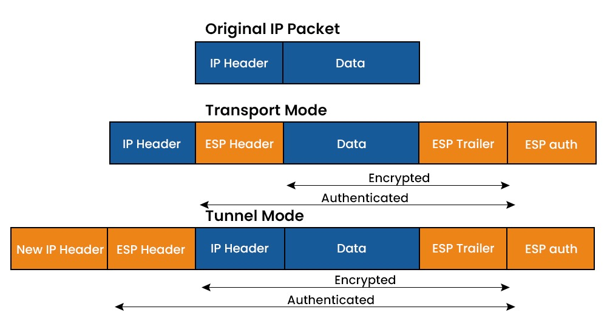
GRE over IPsec transport mode
GRE over IPsec transport mode簡單來說就是建立一個GRE tunnel，並設定IPsec transport mode保護在兩個peer中傳輸的封包內容。
這種方式缺點是兩邊都必須有public IP，不能位於NAT後方。
GRE over IPsec tunnel mode
GRE over IPsec tunnel mode則是先在兩個peer間建立IPsec tunnel，接著使用IPsec tunnel中的IP去建立GRE tunnel，此時GRE tunnel的整個封包都會被ESP給包住，因此達到加密的效果。
這種方式建立的tunnel封包對多一個IPsec tunnel的IP header，MTU會比較低，如果可以，使用transport mode會是更好的選擇。
IPsec
在設定IPsec的過程中會看到很多參數像sha1、aes256、DH group14、modp2048或是其他類似的，這些參數在不同設定間有些重複，有些又不同，很容易讓人搞混，其實IPsec的主要部分按照我的理解可以分成4個部分
- Phase 1設定： 負責身分驗證，成立才會進行Phase 2
- 在EdgeOS 中這部份的設定叫 ike-group
- 在RouterOS 中這部份的設定是 Profile
- Phase 2 設定： 負責加密的設定
- 在EdgeOS 中這部份的設定叫 esp-group
- 在RouterOS 中這部份的設定是Proposals
- Peer 設定： 定義對方的端點之類的資訊
- 在EdgeOS 中這部份的設定和Policy一起包在site-to-site/peer裡面
- 在RouterOS 中這部份的設定在Peers和Identities裡
- Policy 設定： 定義要對哪些封包做IPsec加密/解密
- 在EdgeOS 中這部份的設定和Peer一起包在site-to-site/peer裡面
- 在RouterOS 中這部份的設定是Policy
剛剛提到的那些參數就是在Phase 1和Phase 2設定中會碰到的，其實只要記住一個原則就是兩邊的設定要相同即可，這樣連線應該就能正常起來，而DH group/modp/pfs其實是同樣的東西，不過叫法會不同，可以查到對應表
操作
網路拓樸如下，請自行替換對應的IP
| public IP(WAN IP) | tunnel interface IP | 內部網路 | |
|---|---|---|---|
| RouterOS | 203.0.113.1 | 10.2.1.1/30 | 192.168.1.254/24 |
| EdgeOS | 203.0.113.2 | 10.2.1.2/30 | 192.168.2.254/24 |
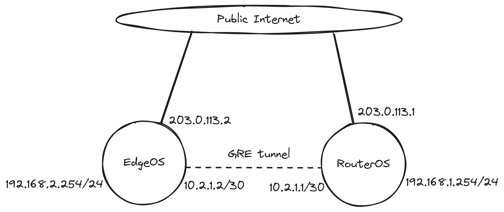
GRE over IPsec transport mode
EdgeOS的部分是參考DN42發布的這篇文章[2]，在Ubiquiti Help Center中並沒有IPsec transport mode的相關文件
EdgeOS
EdgeOS部分的設定我使用設定檔來呈現，和指令是對應的
1 | |
RouterOS
IP -> IPsec -> Profiles -> new
Profile 是IKE phase1協商的參數，基本上設定都可以和EdgeOS的部分對應到
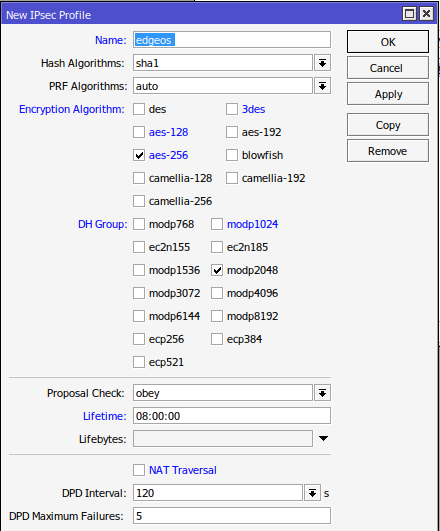
IP -> IPsec -> Peers -> new
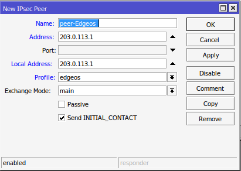
IP -> IPsec -> Identities -> new
這裡我是使用PreshareKey來驗證對方，雖然使用RSA key或證書來驗證更安全，但是EdgeOS那邊的RSA key格式是plain RSA格式，要和PEM格式相互轉換很麻煩
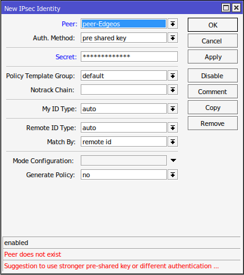
IP -> IPsec -> Proposals -> new
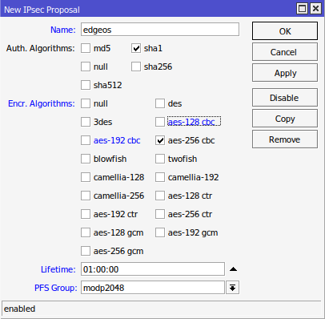
IP -> IPsec -> Policies -> new
Protocal 47就是代表GRE
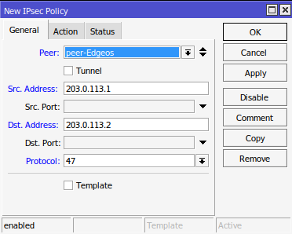
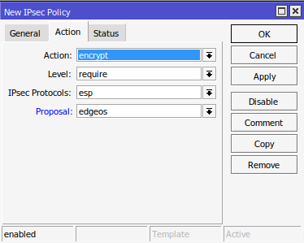
Interfaces -> GRE Tunnel -> new
因為另一邊MTU設1400這邊也設同樣的值，不過不一定要1400，可以稍大一點像1420，因為GRE header佔24Byte，ESP header佔50～60Byte，大概1420也可以
這裡的local IP和remote IP直接填Public IP就行，Policy會攔截對應的封包加上IPsec
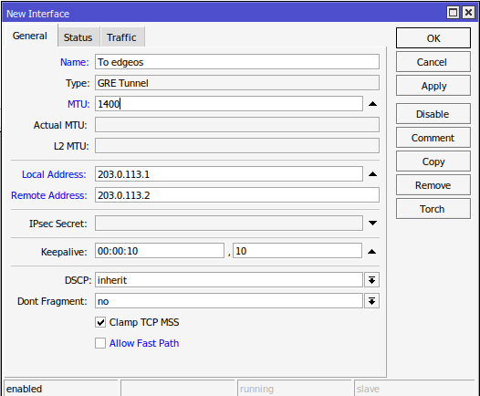
IP -> Addresses -> new
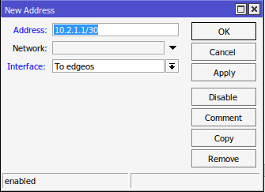
這樣就完成設定了，可以嘗試看看ping對方的GRE tunnel的 IP了
GRE over IPsec tunnel mode
在這部份中，將會在兩個peer上建立loopback interface，IPsec tunnel將設定成只會轉發對方loopback interface 的IP
下表是示範時使用的IP，如果要使用其他IP，請替換對應的位置
| loopback interface IP | |
|---|---|
| RouterOS | 10.1.1.1/32 |
| EdgeOS | 10.1.1.2/32 |
IPsec tunnel
此部份大部分參考這些文件[3][4]，但在此之上做了一些小修改
RouterOS
IP -> IPsec -> Profiles -> new
Profile 是IKE phase1協商的參數
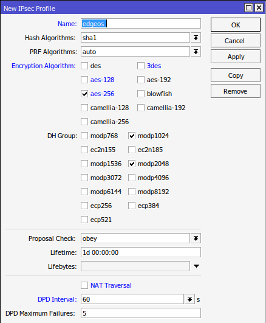
如果想更改EdgeOS端Encryption的參數，要在這裡修改對應的參數
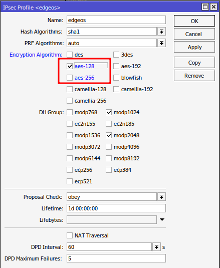
IP -> IPsec -> Peers -> new
IP -> IPsec -> Identities -> new
先不用在意底下的警告，等最後再回來確認就好
IP -> IPsec -> Proposals -> new
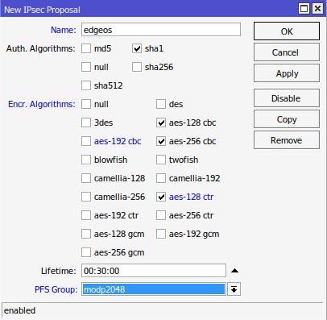
如果想更改EdgeOS端DH Group的參數，要在這裡修改對應的參數
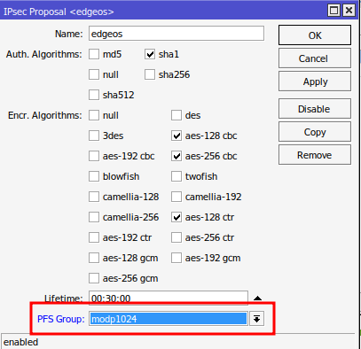
建立loopback interface
由於RouterOS沒有loopback interface一類的設備[5][6]，因此創建loopback interface的方法會是建立一個空的bridge，然後給予這個bridge一個IP
Bridge -> Bridge -> new
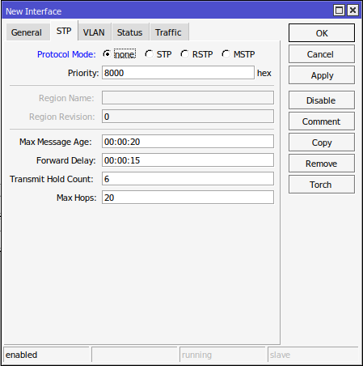
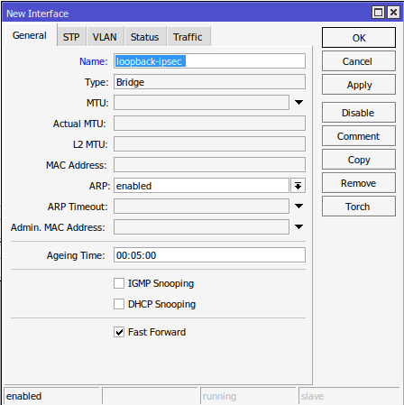
其他設定保持默認就好
IP -> Addresses -> new
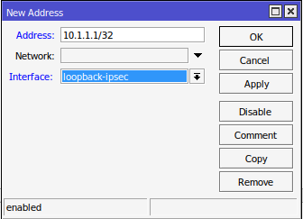
IP -> IPsec -> Policies -> new
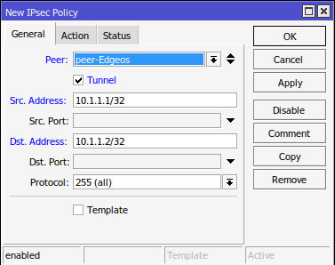
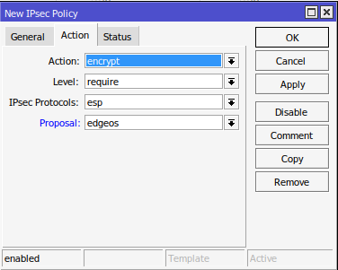
如果要轉發多個子網的話Action部分的Level要設定為unique，不過此次設定只需要轉發兩端router的IP就好
IP -> Firewall -> NAT -> new
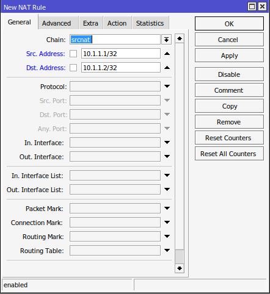
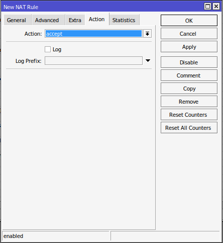
要將此條規則移至最上方
EdgeOS
創建loopback interface
1 | |
設定IPsec Site to Site VPN
VPN頁面 -> IPsec Site-to-Site
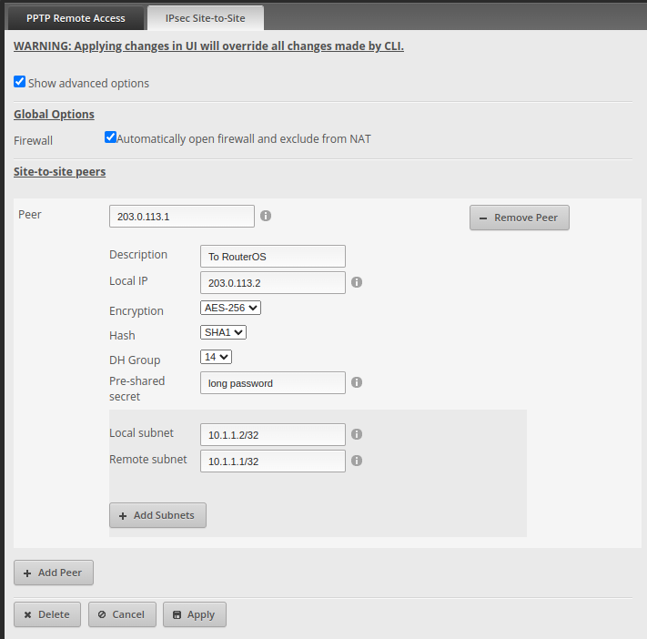
完成這些設定後，兩端的IPsec tunnel應該就架好了，可以嘗試互相ping看看對方的loopback inerface IP，使用RouterOS ping時記得要指定來源IP為loopback inerface IP
在IPsec 的Active Peers和Installed SAs應該就能看到東西出現了
GRE tunnel
RouterOS
Interfaces -> GRE Tunnel -> new
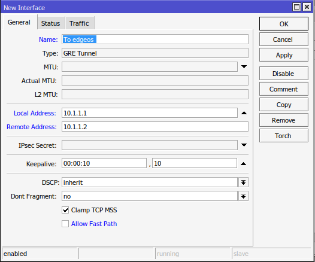
設定成功後應該會顯示mtu的資訊
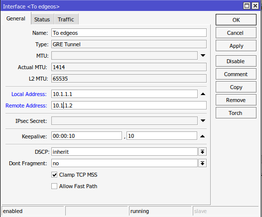
IP -> Addresses -> new
EdgeOS[7]
1 | |
完成這些設定後，在兩個peer間就建立了GRE over IPsec tunnel
設定路由
完成tunnel的設定後要加上路由才能讓內網的連通到另一個內網
RouterOS
IP -> Routes -> new
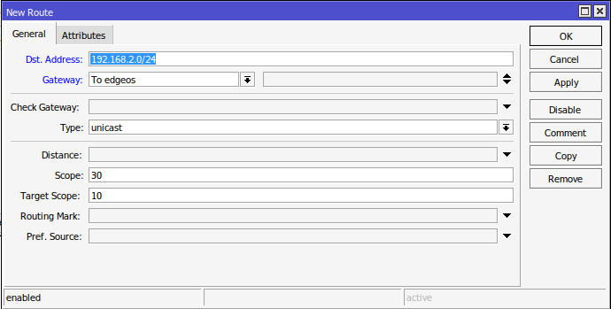
EdgeOS
1 | |
參考
- GRE Over IPsec for Secure Tunneling : VyOS Support Portal ↩
- howto/EdgeOS GRE IPsec Example ↩
- How to create an IPsec VPN between Unifi USG and Mikrotik firewalls ↩
- EdgeRouter to MikroTik IPSec VPN ↩
- Dummy or Loopback interface ↩
- loopback interface in mikrotik ↩
- EdgeRouter - GRE Tunnel ↩
- Manual:IP/IPsec - MikroTik Wiki ↩
- EdgeRouter - EoGRE Layer 2 Tunnel ↩
- GRE over IPSec tunnel ↩
- EdgeRouter - Modifying the Default IPsec Site-to-Site VPN ↩